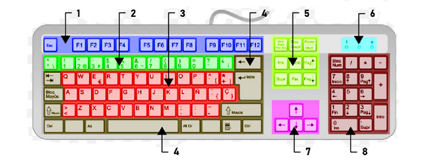
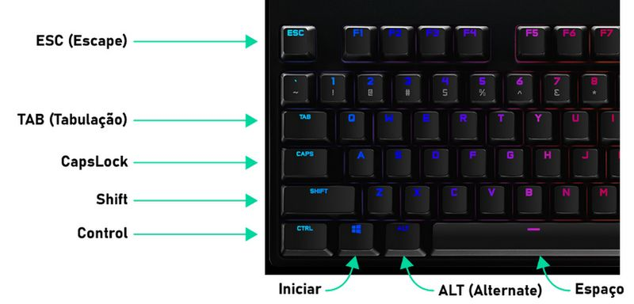
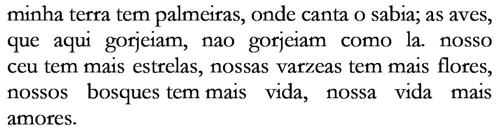

Apesar de o teclado possuir muito mais botões que o mouse, é relativamente simples de aprender. Ele possui alguns grupos principais de teclas. Confira na imagem abaixo cada grupo de acordo com a numeração:
1 - Teclas de Funções;
2 - Teclas Numéricas;
3 - Teclas Alfabéticas;
4 e 5 - Teclas de Acesso;
6 - LEDs;
7 - Setas Direcionais;
8 - Teclado Numérico
Existem diferentes layouts de teclado, um teclado pode possuir teclas extras inseridas pelo fabricante como teclas de volume, de mídia, etc. Existe ainda layouts padrões de teclado para cada idioma. Alguns teclados podem não ter o teclado numérico, mas terão as teclas numéricas sobre o teclado alfabético.
É importante na hora de escolher um teclado, procurar pelo que seja mais confortável (tenha teclas macias), no entanto que possua pelo menos os conjuntos principais de teclas exibidos na imagem anterior, e o principal de tudo: escolha um teclado no layout do seu idioma. É muito comum ser vendido teclados estrangeiros, e isso pode lhe dar uma dor de cabeça para se acostumar, um exemplo bem comum é o teclado americano que não possui o “Ç” e alguns acentos que são típicos de línguas latinas. As configurações de teclado do Brasil são ABNT e ABNT2, comumente chamados de teclado brasileiro.
Para utilizar todas as teclas do teclado numérico o melhor aplicativo é a calculadora. Para isso clique no menu Iniciar procure pela pasta Acessórios do Windows e selecione Calculadora. É possível que ela esteja destacada nos blocos do menu Iniciar.
Na calculadora podemos efetuar contas clicando nos botões com o mouse ou utilizando o teclado numérico, que é nosso objetivo.
Note que a primeira tecla no teclado numérico é chamada de Numlock, ao pressionar essa tecla um led com o mesmo nome logo acima acende ou apaga. Enquanto este led estiver apagado o teclado numérico possui a função de setas direcionais, para escrevermos números com ele, é necessário que o led Numlock esteja aceso.
Para utilizarmos o teclado alfabético, o melhor aplicativo é o Bloco de Notas, onde podemos escrever textos simples e sem formatação.
Para abrir o Bloco de Notas clique no menu Iniciar, (ou procure no teclado uma tecla com o mesmo símbolo), em seguida navegue até Acessórios do Windows e selecione Bloco de Notas.
Com o bloco de notas aberto, podemos escrever o que quisermos. Para alternar entre letras maiúsculas e minúsculas utilizamos duas teclas, Capslock ou Shift:
As teclas Control e Shift ficam bem nos cantos do teclado alfabético, uma de cada lado, isso porque ao escrevermos podemos acessá-las tanto com a mão direita como com a mão esquerda.
As teclas podem possuir um símbolo, o nome ou ambos, confira alguns:
Shift
Seta apontando para cima. Usada para alternar entre maiúscula e minúscula e atalhos. A letra só sairá maiúscula se a tecla Shift estiver pressionada ao mesmo tempo em que a letra for teclada.
Tab
Seta apontando para a direita. Usada para inserir um espaço de tabulação (geralmente quatro ou oito espaços no começo de um parágrafo) ou para alternar entre opções em alguns aplicativos.
Backspace
Seta apontando para a esquerda. Usada para apagar caracteres à esquerda do cursor de texto ou para retornar em páginas. A tecla Delete é utilizada para apagar caracteres à direita do cursor.
Para um exercício simples usando as teclas, escreveremos um trecho da Canção do Exílio, de Gonçalves Dias. Note que o texto não possui letras maiúsculas nem acentos, isso porque deixaremos para fazê-los depois.
O texto deve ficar todo em uma linha só, o que pode atrapalhar a visualização, então para que o Bloco de Notas pule automaticamente para a linha de baixo, faça o seguinte:
1. Clique no menu Formatar.
2. Selecione “Quebra automática de linha”. Esta opção deve ficar marcada. Então digite o texto:

Para mover o cursor entre as linhas de texto você pode utilizar as setas direcionais!
Agora vamos adicionar as quebras de linha, acentuação e formatação corretas ao texto. Seguindo o exemplo abaixo você vai:
1. Adicionar quebras de linha:
Para adicionar quebras de linha clique entre a pontuação e a próxima letra e pressione a tecla Enter. Exemplo: “palmeiras, onde”.
2. Alterar maiúsculas e minúsculas:
Para alterar uma letra clique sobre ela e apague usando a tecla Backspace (se o cursor estiver depois da letra) ou a tecla Delete (se o cursor estiver antes da letra). Em seguida digite a letra novamente segurando Shift.
Lembre-se: Para usar um atalho de teclado, a tecla funcional (Control, Shift, ou Alt) é mantida pressionada, até mesmo combinações dessas teclas, enquanto a tecla com a letra do atalho é pressionada rapidamente.
Para digitar uma letra maiúscula mantenha pressionada a tecla Shift e depois pressione a letra.
Para adicionar acentos, temos que apagar as letras sem acentos, clique sobre a letra e use a tecla Delete (se o cursor estiver antes da letra) ou a tecla Backspace (se o cursor estiver depois da letra). Em seguida aperte a tecla com o acento que você deseja, depois a letra, e ela sairá com acento.
Lembre-se: o acento é posto primeiro e a letra depois! Para usar o segundo acento de uma tecla, mantenha pressionada a tecla Shift, para usar o terceiro acento, mantenha pressionada a tecla AltGr (o Alt da direita). A tecla AltGr é a combinação das teclas Control e Alt. Se surgirem dificuldades em encontrar ou inserir um caractere ou em utilizar um atalho, peça ajuda de seu instrutor.
O texto deve ficar dessa maneira:
A tecla Capslock é utilizada para digitar letras maiúsculas sem necessidade de utilizar o Shift, sempre que a tecla Capslock é pressionada ela apaga ou acende um led com o mesmo nome acima do teclado numérico (ao lado do led Numlock). Enquanto o led Capslock estiver acesso todas as letras sairão maiúsculas.
Para selecionar partes do nosso texto podemos clicar com o botão esquerdo do mouse, mantê-lo pressionado e arrastar selecionando o texto, outra forma de selecionar é utilizando a tecla Shift pressionada e usando as setas direcionais.
Com o texto selecionado podemos manipulá-lo de diversas formas a depender do tipo de editor de texto que utilizamos. Por hora vamos fazer o seguinte:
1. Mantenha pressionada a tecla Control e em seguida pressione a letra A. Você deve ter selecionado tudo, certo?
2. Agora clique no menu Editar e selecione Copiar.
3. Agora clique no final do texto para retirar a seleção.
4. Pressione a tecla Enter para inserir uma quebra de linha.
5. Clique no menu editar e selecione Colar. Você deve ter inserido uma cópia inteira do texto, certo? Vamos fazer de novo?
6. Clique no menu editar e selecione Desfazer.
A opção Desfazer está presente em quase todos os aplicativos e serve para voltar atrás quando fizermos algo errado. Só utilize caso queira cancelar uma ação incorreta no trabalho.
7. Agora repita todo o processo, selecione o texto, copie e cole, faça três cópias.
8. Para as próximas cópias, ao invés de clicar no menu Editar → Copiar e Editar → Colar, utilize as teclas Control+C (copiar) e Control+V (Colar).
Control+C ou CTRL+C significa manter a tecla Control pressionada e teclar a letra C, serve para Igualmente CTRL+V que serve para colar.
Por fim vamos salvar nosso arquivo para podermos abri-lo mais tarde. Clique no menu Arquivo, → clique em Salvar, → clique na pasta Documentos na lateral da janela, digite um nome para o arquivo e clique em salvar.
Com o teclado, podemos ainda utilizar diversas combinações de teclas que formam atalhos para diferentes funções, vejamos alguns dos atalhos mais comuns em aplicações do Windows.
Alt+Tab:
Serve para navegar entre as janelas abertas;
Ctrl+A:
Serve para selecionar tudo, seja texto, num editor de textos, objetos em diversos editores, ou pastas e arquivos, no Explorador de Arquivos.
Ctrl+S:
Serve para salvar um arquivo aberto num editor.
Ctrl+C:
Serve para copiar textos ou objetos em editores, ou arquivos e pastas no Explorador de Arquivos.
Ctrl+X:
Serve para recortar textos ou objetos em editores, ou arquivos e pastas no Explorador de Arquivos.
Ctrl+V:
Serve para colar textos ou objetos em editores, ou arquivos e pastas no Explorador de Arquivos.
Ao utilizarmos a opção de copiar (ou Ctrl+C), uma cópia do arquivo ou objeto é armazenada num setor da memória do computador chamado Área de Transferência.
Quando é utilizada a opção recortar (ou Ctrl+X), o arquivo ou objeto é retirado do local original e transferido para a área de transferência.
Sempre que utilizamos a opção colar (ou Ctrl+V) o arquivo ou objeto que estava na Área de Transferência é copiado para o local atual, no entanto sua cópia permanece na área de transferência, podendo ser colado várias vezes ou em vários locais diferentes.
Para ver um histórico com todos os arquivos na Área de Transferência e utilizar qualquer um deles para colar, pressione ⊞+V.
A tecla F1 por padrão na maioria dos aplicativos acessa a ajuda daquele aplicativo, sempre que houver dúvidas na utilização do mesmo, o menu de ajuda pode ser acessado oferecendo um aprendizado rápido com respostas para as dúvidas mais frequentes. Em alguns casos o menu de ajuda é on-line, o que quer dizer que ao pressionarmos a tecla F1 uma página da web será aberta com a ajuda para aquele aplicativo.
⊞+E:
A combinação da tecla do logotipo do Windows e a letra E é o atalho padrão para abrir o Explorador de Arquivos.
Dentro do explorador de arquivos temos várias formas de utilizar o teclado:
Selecionar:
Para selecionar vários arquivos podemos clicar em cada um deles segurando a tecla Control, isso irá adicionando-os à seleção. Podemos ainda selecionar vários arquivos clicando no primeiro e no último segurando a tecla Shift, isso fará com que todos os arquivos nesse intervalo sejam selecionados. Para selecionar todos os arquivos dentro de uma pasta podemos ainda usar o atalho Control+A.
Excluir:
Para excluir um arquivo utilizamos a tecla Delete com o arquivo selecionado. O arquivo excluído será enviado para a lixeira.
Renomear:
Para renomear um arquivo utilizamos a tecla F2 com o arquivo selecionado.
Desfazer:
Se renomearmos um arquivo ou enviamos para a Lixeira por engano podemos reverter a ação utilizando o atalho Control+Z para desfazer.
Refazer:
Caso você tenha desfeito uma ação que não quisesse desfazer você pode utilizar o atalho Control+Y para refazer.
Em quase todos os aplicativos existem as funções Desfazer e Refazer.
⊞+R:
A combinação da tecla do logotipo do Windows e a letra R abre a caixa de diálogo Executar pela qual é possível executar aplicativos e comandos do sistema por meio de palavras-chave da Linguagem Bash (A linguagem do MS-DOS). Por exemplo, se você digitar “notepad”, sem as aspas, e pressionar Enter, abrirá o Bloco de Notas. Segue abaixo uma lista de comandos úteis:
notepad Abre o Bloco de Notas
mspaint Abre o Paint. Um programa utilizado para desenhar.
explorer Abre o Explorador de Arquivos
shutdown -s -t 1200 Programa o computador para desligar em 20 minutos (1200 segundos).
shutdown -r -t 3600 Programa o computador para reiniciar em uma hora (3600 segundos).
shutdown -a Abora um desligamento programado.
control Abre o Painel de Controle.
write Abre o Wordpad ( Um editor de texto mais avançado que o Bloco de Notas).
⊞+L:
A combinação da tecla do logotipo do Windows e a letra L bloqueia a tela do computador.
⊞+A:
A combinação da tecla do logotipo do Windows e a letra A abre as notificações do Windows.
⊞+D:
A combinação da tecla do logotipo do Windows e a letra D exibe a Área de Trabalho.